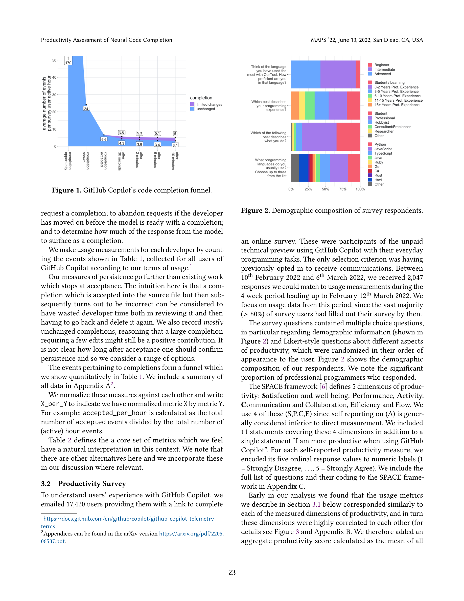
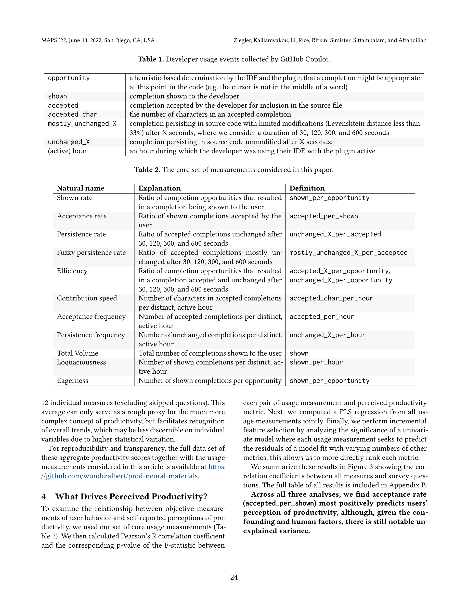
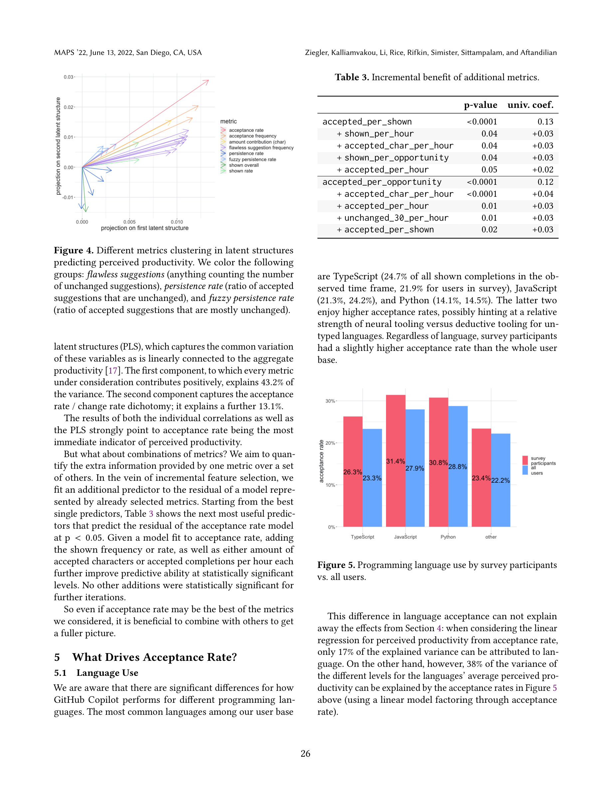

Figure 1

Figure 3
GitHub Copilot 사용자의 체감 생산성(perceived productivity)과 실제 사용 지표 간의 관계를 분석한 사례 연구이다. 2,631명의 설문 응답과 IDE 텔레메트리 데이터를 매칭하여, 제안 수락률(acceptance rate)이 코드의 지속성(persistence)이나 기여량 등 더 정교한 지표보다 체감 생산성을 더 잘 예측한다는 것을 발견했다.

Figure 4
신경망 기반 코드 완성 시스템(GitHub Copilot, Kite, TabNine 등)이 개발자 생산성을 높인다고 표방하지만, 이를 직접 측정하기 어렵다. 오프라인 평가(HumanEval 등)와 실제 IDE 사용 간에는 상당한 괴리가 있으며(예: IntelliCode의 Recall@5가 오프라인 90%에서 온라인 70%로 하락), 작업 완료 시간 같은 전통적 생산성 지표는 AI 코딩 도구의 이점을 충분히 포착하지 못한다. 사용자가 느끼는 생산성을 객관적 사용 데이터로 설명할 수 있는 지표를 찾는 것이 필요했다.
| 항목 | 점수 (1-10) | 비고 |
|---|---|---|
| 참신성 (Novelty) | 7 | 사용 지표-체감 생산성 연결 최초 확립, 지속성 지표 도입 |
| 기술적 완성도 (Soundness) | 7 | 대규모 데이터(2,047명), PLS 회귀 등 체계적 분석, 다만 설명력 한계 |
| 유의미성 (Significance) | 8 | AI 코딩 도구 평가 및 제품 지표 설계에 실질적 영향 |
| 재현성 (Reproducibility) | 7 | 집계 데이터 공개, 다만 원시 텔레메트리 비공개 |
| 종합 (Overall) | 7 | AI 코드 완성 도구의 가치 측정 방법론에 대한 실용적이고 통찰력 있는 산업 연구 |